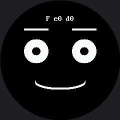

Only Redraw What Changed
Every animation in this kit so far has been careful about this, and now you find out why — and by how much.
Wiping the whole screen and rebuilding the whole face to move one curve means sending 115,200 bytes to erase, plus every pixel of every eye, eyebrow, and mouth, over and over, to change a few hundred pixels that actually differ.
Two Questions, in Order
Ask the decomposition question first: which pixels actually change? Answer it and you can erase a small rectangle instead of the whole screen. That is how every video codec, every game engine, and every windowing system on earth stays fast.
Then ask the second question, the one that separates a guess from engineering: did it help, and by how much? Button A toggles between full and partial redraw while the screen reports two timings in microseconds:
| Reading | What it measures |
|---|---|
ers |
Time spent erasing — a full screen, or one small box |
drw |
Time spent drawing the face parts back |
The Answer Is Different From the OLED Kit's, and That Is the Point
On the OLED, the frame buffer had to be shipped in full every time no matter what, so the saving was real but small and the honest conclusion was "you optimized the cheap part."
Here there is no frame buffer. Every pixel you skip is a pixel you never send. Predict what that does to the numbers before you press the button.
| OLED kit | This kit | |
|---|---|---|
| What a full redraw costs | Whole buffer shipped either way | Whole screen sent, pixel by pixel |
| What partial redraw saves | Drawing time only | Drawing and transmission |
| Honest conclusion | "Real, but you optimized the cheap part" | Measure it and see |
Same optimization, same code shape, wildly different payoff. What changed was not the idea — it was the hardware underneath it. That is why the measuring step is not optional. An optimization is not fast or slow on its own; it is fast or slow on something.
Sample Program Code
1 2 3 4 5 6 7 8 9 10 11 12 13 14 15 16 17 18 19 20 21 22 23 24 25 26 27 | |
The full program is 29-partial-redraw.py in the kit.
Here's the benchmark running:

The F means full-redraw mode; e and d are the erase and draw timings in microseconds. Press
button A and the F becomes a P, with two very different numbers beside it.
Average, Don't Sample
 This lab averages ten frames before it reports anything. A single reading of something this fast is mostly noise; an average is a measurement. That habit is worth more than any one number it produces.
This lab averages ten frames before it reports anything. A single reading of something this fast is mostly noise; an average is a measurement. That habit is worth more than any one number it produces.
Make the Invisible Visible
Everything above happens where you cannot see it, because erasing paints black onto black. Set one value — button B toggles it live — and every erase box becomes a colored rectangle with the redrawn part sitting on top of it:
1 | |
| Mode | What lights up | Pixels repainted |
|---|---|---|
| Full redraw | The entire circle, every frame | 57,600 |
| Partial redraw | One rectangle around the mouth | 8,208 |
Seven times fewer, and nobody has to be talked into believing it.
Watch the ers Number While You Toggle the Color
 It does not change. A red pixel and a black pixel are both two bytes of RGB565, so making your program explain itself cost you nothing at all. That is rarer than it sounds, and worth taking when you can get it.
It does not change. A red pixel and a black pixel are both two bytes of RGB565, so making your program explain itself cost you nothing at all. That is rarer than it sounds, and worth taking when you can get it.
Things to Try
- Predict the ratio before you toggle. Then look. Then go read the OLED kit's version of this lab and predict what it will say. Being right about one and wrong about the other is the lesson landing.
- Make the mouth box too small — change
MOUTH_BOX_Hto 20 — and watch the grin's corners smear off the edges of the box you forgot to erase. Partial redraw fails loudly when you get the geometry wrong, which is bug 2 wearing a disguise. - Do exercise 2 again with the red erase box on. The smear is no longer a mystery: the leftover pixels are sitting plainly outside a rectangle you can see the edges of.
- Slow the wire down instead of the drawing. In
config.py, dropBAUDRATEto10_000_000and run again. Every number here gets worse in proportion, because on this display every number here is wire time. - Add the eye pupils to the animation so they sweep as well. You now need a third box. At what point does tracking boxes get harder than just redrawing the screen? There is no single right answer, and knowing that is the skill.
References
- Eye Scanner — where erasing one box instead of the screen first appeared
- Trace and Watch — the measuring habit this lab formalizes
- How Fast Is a Face? — the other half of the speed story, about batching